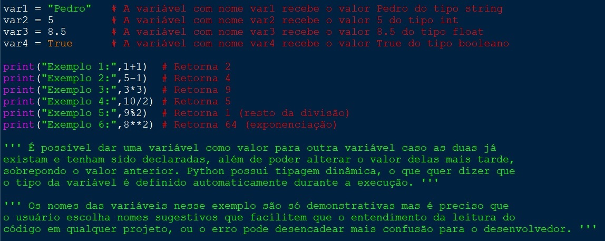
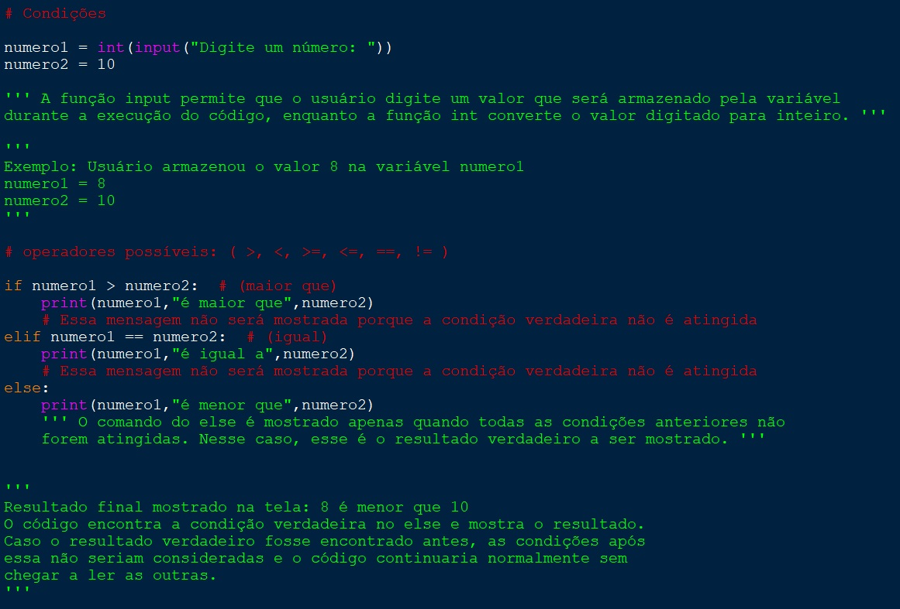
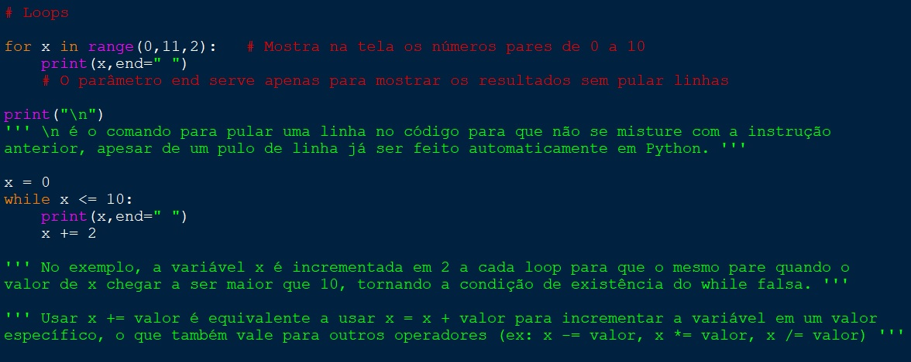
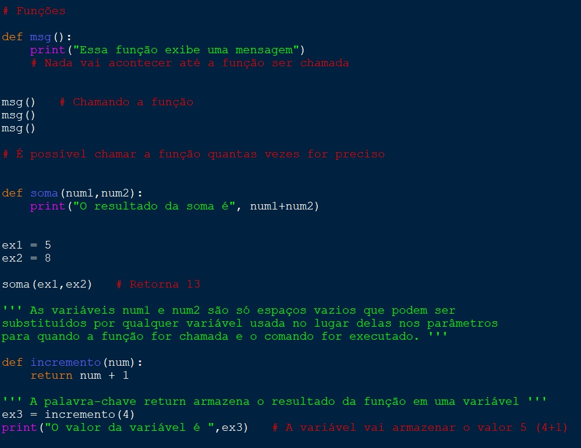

Python é uma linguagem de alto nível e código aberto com a sintaxe simples e mais próxima da linguagem humana, o que a torna extremamente recomendável para programadores iniciantes. Atualmente, Python chega a ser uma das linguagens mais promissoras e com maior crescimento no mercado. Esse tutorial tem o objetivo de apresentar os conceitos básicos da linguagem de forma rápida e testar o conhecimento adquirido no final por meio de um teste, gerando a pontuação do aluno no banco de dados para comparação com outros usuários. A linguagem pode ser instalada junto de seu ambiente de desenvolvimento integrado (IDE) no link.
Entrada e Saída
Python, apesar de utilizar o inglês como base do código antes de passar pelo compilador e ser convertido para linguagem de máquina, possui vocabulário simples para o entendimento do usuário. Como qualquer outra linguagem, Python possui algumas funções essenciais e palavras reservadas já incluídas em sua biblioteca, facilitando a experiência do programador em executar o programa. Uma das funções mais importantes que serão utilizadas daqui para frente como forma de mostrar um resultado de saída na tela, criando uma "comunicação entre usuário e máquina", é a função print, onde o usuário pode mostrar no terminal o valor de um texto ou variável contendo algum tipo de dado quando o código for executado, o que será abordado mais tarde na seção Variáveis. O conteúdo dentro da função print pode ser formatado pelo uso do sinal de mais (+) ou até uma vírgula para concatenar (ligar) variáveis e texto, além de poder acrescentar parâmetros e exibir o valor de retorno de funções, das quais serão abordadas mais tarde na seção Funções do tutorial.
Variáveis
O conceito de variáveis consiste em reservar um espaço na memória e dar a ela um nome, tipo e valor. Os tipos de variáveis mais comuns em Python são int (números inteiros), float (números decimais ou com ponto flutuante), string (caracteres usados entre aspas) e booleano (True ou False, representando respectivamente os valores verdadeiro e falso). Vale ressaltar que o tipo de dado booleano também aceita os valores 1 como equivalente a True e 0 como equivalente a False. Existem funções especiais como int, float, str e bool para converter tipos de dados para outros quando for possível, além de que é preciso entender que variáveis com valores entre aspas ou apóstrofos sempre serão string e não será possível fazer cálculos envolvendo valores numéricos em forma de string com valores numéricos a menos que ocorra alguma conversão temporária da string no momento da leitura (ex: "5" + 3 resulta em erro). Quando for feita uma comparação entre dados numéricos e strings com o mesmo valor, os dois serão considerados como diferentes. Os operadores matemáticos em Python são representados por + (adição), - (subtração), * (multiplicação), / (divisão), % (módulo da divisão para obter o resto) e ** (exponenciação).

Condições (IF/ELSE)
Como toda linguagem de programação, Python também possui o uso de condições lógicas para fazer decisões ao longo do código através do uso das funções if e else, além do elif para casos onde há mais de duas possibilidades no código. O conceito envolve um bloco de código onde o programador deve criar decisões fazendo uso de operadores lógicos da matemática como maior que (>), menor que (<), igual (==), diferente (!=), maior ou igual (>=), menor ou igual (<=) para fazer a comparação entre variáveis e/ou valores de qualquer tipo de dado, de forma que apenas a condição que retorne o resultado verdadeiro seja executado no código no caso do if. Caso contrário, o código continuará lendo cada condição de elif até encontrar o resultado verdadeiro e executando o else apenas quando nenhuma das comparações lógicas nas condições acima dela sejam verdadeiras. Para verificar mais de uma condição, é possível usar operadores lógicos como AND ("e") onde o retorno é verdadeiro apenas quando todas as condições forem verdadeiras, OR ("ou") onde o retorno é verdadeiro apenas quando pelo menos uma condição é verdadeira, e NOT ("não") onde o resultado da condição escolhida é invertido. Como em qualquer função, é preciso terminar o comando principal com dois pontos (:), pular uma linha e deixar os comandos que fazem parte da função nas linhas abaixo com uso de identação para mostrar que "pertencem à família", o que quer dizer que é preciso usar espaços ou simplesmente apertar a tecla tab do teclado na hora de escrever qualquer linha que faça parte dessa função no código.

Loops (FOR/WHILE)
Loops são essenciais em qualquer linguagem de programação pelo fato de que podem fazer com que algum trecho de código seja repetido quantas vezes for preciso de forma que não seja necessário escrever o processo novamente para cada repetição. Esse processo é feito por meio das funções for e while. No caso do for, é preciso especificar o nome de uma variável qualquer para armazenar o valor do loop atual e definir o parâmetro inicial (opcional, caso contrário o valor padrão será 0), final e o intervalo (também opcional, usando o valor padrão como 1) especificando o salto entre os dois parâmetros, o que pode alterar a quantidade de iterações. É importante ressaltar que o loop SEMPRE chegará ao resultado final menos 1 (exemplo: um loop que vai de 0 a 10 com intervalo de 1 irá mostrar na tela todos os valores de 0 a 9, e um loop que vai de 0 a 10 com intervalo 2 irá mostrar na tela todos os valores pares de 0 a 10 sem incluir o 10). No caso do while, o loop será executado infinitamente a menos que exista uma condição de parada para sair dele, o que implica o uso de operadores lógicos para trazer um resultado verdadeiro e sair do loop quando o mesmo for atingido. Recomenda-se usar o for quando o número de laços de repetição seja conhecido e especificado, enquanto o while deve ser usado quando o programador, mesmo sabendo a faixa de valores para que o bloco de código pare de ser repetido, não sabe ao certo o número de iterações que quer atingir. A condição de parada pode ser atingida em algum momento imprevisível de acordo com os comandos do usuário dentro do bloco de código da função. É preciso colocar em mente que cada um dos blocos de código dessas funções será executado em loop e o compilador só chegará a ler as próximas linhas do código quando esse loop terminar.

Listas e Dicionários
Listas são estruturas de dados que possuem múltiplos itens armazenados, onde cada item possui uma posição definida que começa no índice 0 e vai até n-1 representando a última posição, além de poder incluir dados de diferentes tipos em uma mesma lista. Sua sintaxe é baseada em armazenar cada elemento separado por vírgulas em uma área rodeada por colchetes. Para acessar cada item de uma lista, é preciso utilizar o nome da lista seguido do índice da posição do elemento entre colchetes (ex: lista[0] para retornar o valor na primeira posição). Além disso, é possível usar a função len seguido do nome da lista entre parênteses para retornar o tamanho da lista. Para mostrar na tela os valores de cada elemento da lista, é preciso usar um loop como for ou while para fazer a iteração em cada posição da lista por meio de uma variável incrementada a cada loop para mudar a posição do elemento a ser mostrado. Apesar de existirem variações da lista como tuplas e sets, o conceito de lista é extremamente importante para programadores iniciantes. Já o conceito de dicionários se relaciona diretamente com a programação orientada a objeto que será abordada em Classes nos próximos capítulos. Dicionários podem armazenar dados no formato de nome:valor entre chaves, o que difere do funcionamento de listas onde só é possível armazenar valores. A ordem de um dicionário é imutável, porém é possível adicionar itens quando for preciso por meio da sintaxe dicionario["nome"] = "valor" ou remover itens usando o método pop seguindo o modelo dicionario.pop("nome") ou del dicionario["nome"].
Funções
Funções consistem em criar um bloco de código através da palavra chave def para executar uma tarefa específica. É recomendado usar funções para deixar o código mais organizado, especialmente quando há alguma parte de código que deve ser reutilizada muitas vezes ao longo do código, podendo obter o resultado final pela mesma lógica, mesmo que seja preciso alterar os valores de entrada (parâmetros) para chegar a isso. A função pronta só é executada no código quando for chamada pelo nome, caso contrário, não influenciará em nada. Um bom hábito para que se possa entender o conceito de funções é considerá-la como uma planta ou modelo para realizar uma tarefa específica quantas vezes for necessário. É possível adicionar parâmetros entre parênteses logo após a função e substituí-los por qualquer valor ou variável na hora da chamada da função.

Classes
Classes são tipos existentes na programação orientada a objeto. Esse paradigma pode representar qualquer pessoa, objeto, ou conceito que possua características ou ações. Os tipos int, float ou string e booleano são tipos padrão do Python que podem ser usados para representar qualquer característica dessa classe. Uma classe é um tipo criado pelo usuário, em que ele determina suas variáveis internas (atributos) e suas funções (métodos). A importância das classes está em definir dados junto à sua forma de manipulá-los. É possível criar um objeto (instância da classe) com todos os seus atributos e métodos, podendo chamar e alterar cada um por meio do valor dos parâmetros a qualquer momento. A criação de uma classe é feita por meio da palavra chave class seguida do nome a ser definido (de preferência começando com letra maiúscula) e terminando com dois pontos. Após isso, o usuário pode criar cada método normalmente pelo uso do def da mesma forma como funciona uma função, além de poder definir cada atributo da mesma forma como é definida uma variável. Entretanto, é recomendado criar uma função com nome __init__ e definir dentro dela cada variável após a palavra self para que o código entenda que toda chamada dessa variável faz referência à instância atual da classe, o objeto em questão.
Clique aqui para baixar o material usado no tutorial.
Utilize o conhecimento adquirido no tutorial para responder as perguntas a seguir: